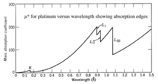
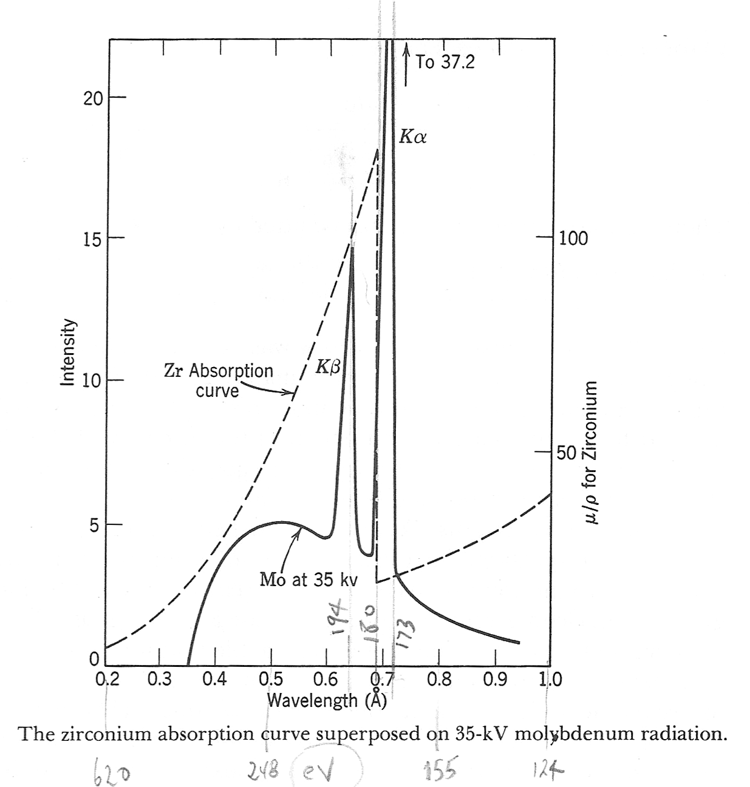

X-ray Diffraction Principles
The nature of X-rays. Two types of radiation: white
radiation and characteristic radiation.
The electromagnetic (EM) spectrum.
The production of X-rays - In practice, X-rays are produced by streaming electrons across an extremely high voltage potential (15-45 Kv with the common stationary anode). The voltage is applied to a filament (typically a tungsten cathode) in a vacuum. The electrons are then accelerated into a metal target (typically a copper anode). The energy released results in two types of X-radiation.
The first type is known as white radiation and consists of a broad, continuous spectrum containing many wavelengths of radiation. It is a result of the very rapid deceleration of electrons as they encounter the strong electric fields of target metal. As the electrons collide they lose energy (often designated ΔE) and that energy goes into making X-ray photons. That energy, ΔE is related to the frequency of the X-ray radiation by Planck's Constant,
White radiation intensity as a function of energy potential
(voltage) as shown in figure below from Klug and Alexander (1994).
Original paper by Ulrey (1918)
Recall electrons orbiting an nucleus are tightly bound. When source electrons strike these outer shell/orbital electrons, the electrons get bounced out of position (in other words the electrons undergo an energy transition). This event is immediately followed by another electron dropping back toward the nucleus (much like dropping a book on the desk). The loss in energy appears as an emitted photon with a characteristic frequency.
The energy difference between electron levels are quantum (i.e., discreet) and the energy released will depend upon the number of protons and neutrons in the nucleus and the shell from which the electron was displaced.
In geology labs, copper and cobalt are commonly used targets. Copper radiation is "brighter", meaning it will produce higher intensity than cobalt radiation. However, if copper radiation encounters material with a high iron content, then a high background signal can be accompany the diffracted signal. Cobalt radiation is preferred for high iron-bearing samples. Since there are only two possible sites in the L shell of copper, there are only two (slightly different) energy transitions: Kα1, from the outer most L shell and Kα2 from the next lower shell.
The result is the production of very intense monochromatic radiation. This is the radiation that we take advantage of when doing X-ray crystallography. The figure below is modified from Klug and Alexander (1974) and shows the characteristic peaks for the target molybdenum. The green and red curves simply show the white radiation expected for lower potentials.

Find: ΔE for the
CuKα1
transition (in units of KeV).
Hint: 1 eV = 1.6 x 10-19J
Here's a
link to help with the conversion of energy units.
The frequency (or wavelength) shift is related to the angle
of scattering as given by the equations below.
3. Heat
4. Fluorescent characteristic X-rays
5. Tertiary X-rays (more white radiation)
Where: I is intensity
µ is the linear absorption coefficient
x is the distance traversed
Upon integration:
The linear absorption coefficient is
proportional to the density (ρ
) which means that the quantity μ/ρ
or (µ*) is constant for a
particular set of elements and is constant regardless of
physical or chemical state (i.e., phase state).
This relationships allows us to modify the "Lambert Law" to
handle the case for mixtures of chemical compounds.
Where µ* is the mass absorption coefficient.
The µ* for a particular element will vary depending upon the
wavelength of radiation absorbed. The "absorption edges" shown in
the figure below mark the point in the frequency (i.e., energy or
wavelength) scale where the X-rays can eject an electron from one
of its orbitals. An edge is formed in the curve, where absorption
drastically drops. The example below from Klug and Alexander
(1994) is for platinum.


Mass absorption (cm2/g) and
densities (g/cm3) for commonly encountered elements
for Cu Kα radiation (λ = 1.542 Å ) and Co Kα radiation
(λ = 1.790 Å )
at room temperature. From International Tables for X-ray
Crystallography
| Absorber | Cu µ* cm2/g |
ρ (g/cm3) |
Co
µ* cm2/g
|
| H | 0.3912 | 0.08375 x 10-3 | 0.3966 |
| Li | 0.477 | 0.533 | 0.659 |
| C |
4.219 |
2.27
(graphite) |
6.683 |
| N | 7.142 | 1.165 x 10-3 | 11.33 |
| O | 11.03 | 1.332 x 10-3 | 17.44 |
| F | 15.95 | 1.696 x -3 | 25.12 |
| Na | 30.3 | 0.966 | 47.34 |
| Mg | 40.88 | 1.74 | 63.54 |
| Al | 50.28 | 2.7 | 77.54 |
| Si | 65.32 | 2.33 | 100.4 |
| K | 148.4 | 0.862 | 222 |
| Ca | 171.4 | 1.53 | 257.2 |
| Ti | 202.4 | 4.51 | 300.5 |
| Mn | 272.5 | 7.47 | 405.1 |
| Fe | 304.4 | 7.87 | 56.25 |
| Rb | 106.3 | 1.53 | 159.6 |
| Sr | 115.3 | 2.58 | 173.5 |
| Cs | 325.4 | 1.91 (-10°C) | 483.8 |
| Ba | 336.1 | 3.59 | 499 |
| U | 305.7 | 19.05 | 446.3 |
Calculation of µ* for the clay mineral kaolinite
- Al2Si2O5(OH)4,
using CuKα radiation values from table above. i
= element, W = weight fraction.
|
|
|
|
|
|
|
|
|
|
0.39 |
0.01 |
|
|
|
|
50.28 |
10.5 |
|
|
|
|
65.32 |
14.17 |
|
|
|
|
11.03 |
6.15 |
| Totals |
258 |
1.000 |
127 |
30.86 |
{kind=link}